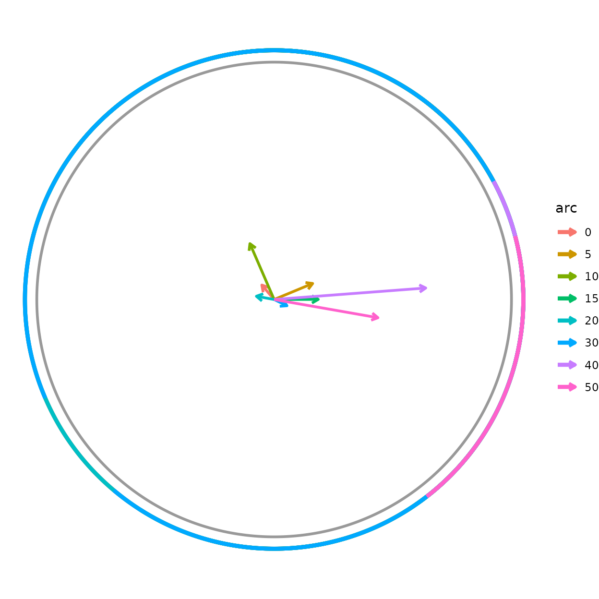
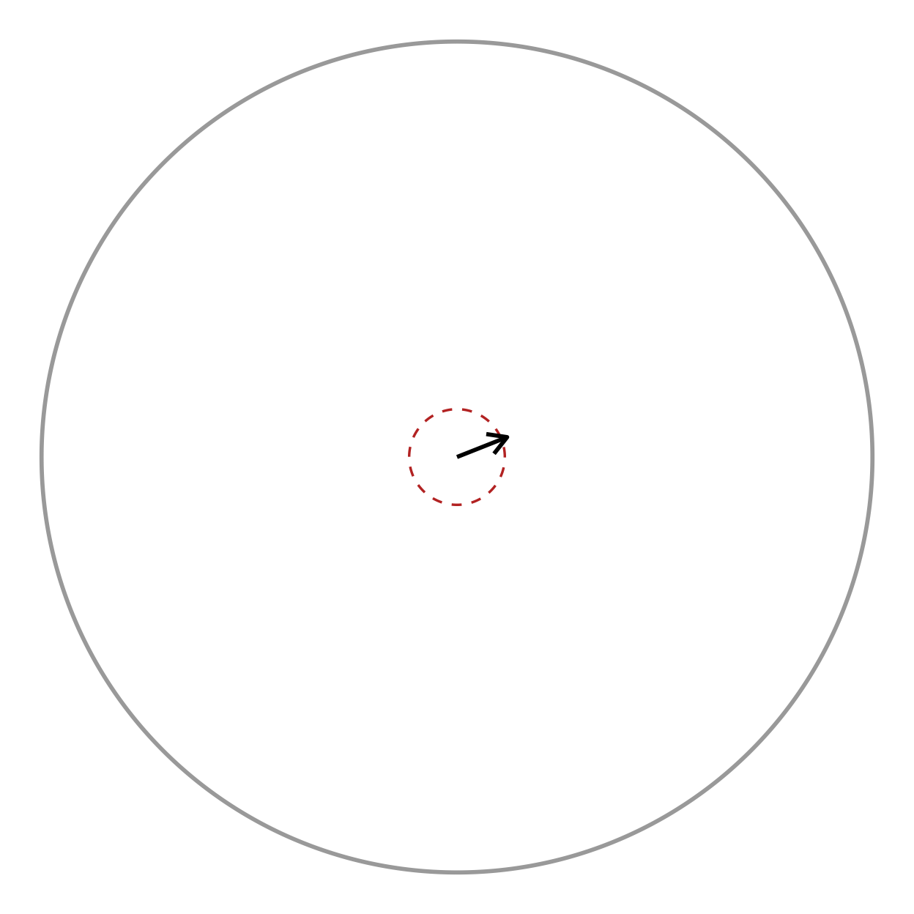
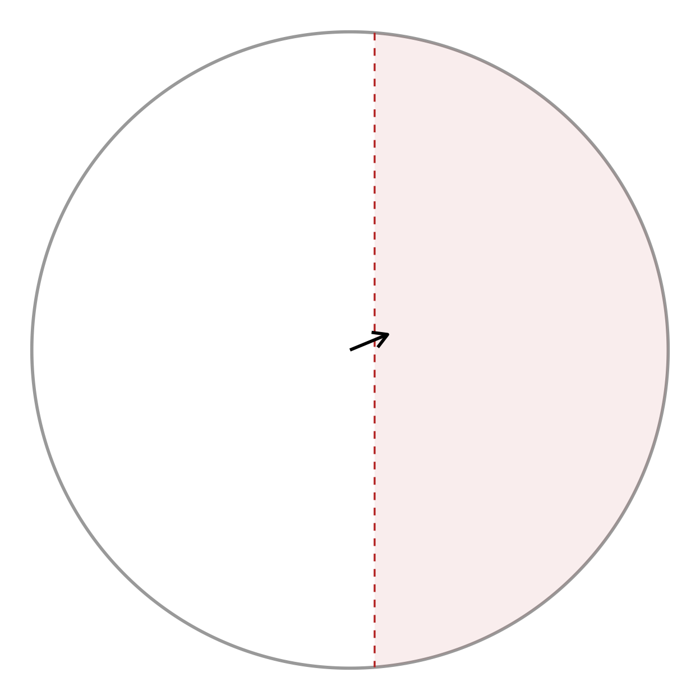

Circular Statistics and Distribution Overlays
Source:vignettes/circular-statistics.Rmd
circular-statistics.Rmd
if (requireNamespace("pkgload", quietly = TRUE)) {
pkgload::load_all("..", export_all = FALSE, helpers = FALSE, quiet = TRUE)
} else if (requireNamespace("radiatR", quietly = TRUE)) {
library(radiatR)
} else {
stop("Package 'radiatR' not installed and 'pkgload' not available.")
}
library(ggplot2)Overview
The main radiatR vignette covers the path from raw tracking files to a plotted set of headings. This vignette picks up from a heading data frame and shows the analysis layer:
-
Dispersion summaries —
circ_dispersion(),sector_summary() -
Parametric fits —
vonmises_fit(),wrappedcauchy_fit() -
Hypothesis tests —
test_uniformity(),test_mean_directions(),test_concentration(), all with multiple-comparison correction -
Correlation —
circ_cor()(circular-linear and circular-circular) -
Distribution overlays —
add_angle_rose(),add_vonmises_density(),add_wrappedcauchy_density(),add_circular_kde() -
Significance geometry —
add_critical_r()(Rayleigh / V-test circle) andadd_critical_v_line()(V-test boundary)
Every statistics function takes a data frame with a heading column in
radians (default name "heading") and returns a tidy data
frame, so the results drop straight into dplyr,
knitr::kable(), or further plotting.
A heading data frame
We derive one heading per trial from the bundled
cpunctatus dataset with the ring-crossing rule, then attach
each trial’s target half-width (arc) for grouping. This is
the same construction used in the main vignette.
data(cpunctatus)
hd <- derive_headings(cpunctatus, rule = "crossing",
circ0 = 0.2, circ1 = 0.4,
coords = "relative",
angle_convention = "clock")
#> Warning: derive_headings(rule = 'crossing'): 25 of 251 trials (10.0%) produced
#> no heading and are excluded from circular statistics. Rule-based failures are
#> often non-random and can bias results; inspect attr(x, "missing_ids").
names(hd)[names(hd) == "id"] <- "trial_id"
# attach target half-width (arc) from the dataset, by trial
arc_map <- unique(cpunctatus@data[, c("trial_id", "arc")])
hd <- merge(hd, arc_map, by = "trial_id")
hd$arc <- factor(hd$arc)
# keep trials with a defined crossing heading
hd <- hd[is.finite(hd$heading), , drop = FALSE]
head(hd[, c("trial_id", "arc", "heading")])
#> trial_id arc heading
#> 1 10_1_1 10 0.2777794
#> 2 10_10_1 10 3.0376774
#> 3 10_11_1 10 6.0710737
#> 4 10_12_1 10 2.2074837
#> 5 10_13_1 10 0.9322361
#> 6 10_14_1 10 4.7955587The heading column is in radians, reference-relative (0
= toward the target). Everything below operates on that column.
Dispersion summaries
circ_dispersion() returns the mean direction, resultant
length R, and circular standard deviation. Grouping by
arc gives one row per condition.
circ_dispersion(hd, group_col = "arc")
#> arc mean_dir resultant_R circ_sd n
#> 1 10 1.980062802 0.25662879 1.6493178 35
#> 2 15 0.002875648 0.18589914 1.8344214 27
#> 3 20 2.960834000 0.07603959 2.2700225 24
#> 4 30 5.830185048 0.06016175 2.3709570 34
#> 5 40 0.075648794 0.64058845 0.9437882 19
#> 6 5 0.394217868 0.17579270 1.8646446 30
#> 7 50 6.109431857 0.44404605 1.2742268 24
#> 8 0 2.276557489 0.08000698 2.2475059 33R runs from 0 (uniformly scattered) to 1 (all headings
identical); the circular SD moves the opposite way. For dense per-frame
heading series — gaze direction from a tethered subject, say —
sector_summary() bins the angles and reports dwell
proportions per sector:
sector_summary(hd, sectors = 8L)
#> sector mid_angle count proportion
#> 1 -158degrees -2.7488936 27 0.11946903
#> 2 -112degrees -1.9634954 18 0.07964602
#> 3 -68degrees -1.1780972 20 0.08849558
#> 4 -22degrees -0.3926991 42 0.18584071
#> 5 22degrees 0.3926991 45 0.19911504
#> 6 68degrees 1.1780972 13 0.05752212
#> 7 112degrees 1.9634954 35 0.15486726
#> 8 158degrees 2.7488936 26 0.11504425Parametric fits
vonmises_fit() estimates the mean direction
and concentration
by maximum likelihood, with asymptotic standard errors and a confidence
interval on
:
vonmises_fit(hd, group_col = "arc")[, c("arc", "mu_deg", "kappa", "n")]
#> arc mu_deg kappa n
#> 1 10 113.4492417 0.5310863 35
#> 2 15 0.1647625 0.3784077 27
#> 3 20 169.6432921 0.1525210 24
#> 4 30 -25.9550030 0.1205419 34
#> 5 40 4.3343566 1.6868180 19
#> 6 5 22.5870200 0.3571578 30
#> 7 50 -9.9553394 0.9900343 24
#> 8 0 130.4371359 0.1605288 33wrappedcauchy_fit() is the heavier-tailed alternative —
more robust when the data have outliers or weak directionality. Its
concentration
is bounded to
:
wrappedcauchy_fit(hd, group_col = "arc")[, c("arc", "mu_deg", "rho", "n")]
#> arc mu_deg rho n
#> 1 10 118.338958 0.25480084 35
#> 2 15 4.745037 0.27375349 27
#> 3 20 159.559101 0.09056095 24
#> 4 30 339.103222 0.08571126 34
#> 5 40 6.248322 0.75905693 19
#> 6 5 25.796263 0.15937039 30
#> 7 50 351.847489 0.68966189 24
#> 8 0 133.599471 0.08467292 33Both return a row per group, so a quick merge() puts the
two concentration estimates side by side for comparison.
Hypothesis tests
Uniformity
test_uniformity() asks, per group, whether the headings
have any preferred direction. The Rayleigh test gives an exact
p-value; when testing many conditions at once, pass
p_adjust for a corrected p_value_adj
column:
test_uniformity(hd, group_col = "arc", test = "rayleigh", p_adjust = "BH")
#> arc statistic p_value n test p_value_adj
#> 1 10 0.25662879 0.099244958 35 rayleigh 0.264653222
#> 2 15 0.18589914 0.397036850 27 rayleigh 0.638463349
#> 3 20 0.07603959 0.872766166 24 rayleigh 0.885708681
#> 4 30 0.06016175 0.885708681 34 rayleigh 0.885708681
#> 5 40 0.64058845 0.000186684 19 rayleigh 0.001493472
#> 6 5 0.17579270 0.399039593 30 rayleigh 0.638463349
#> 7 50 0.44404605 0.007583494 24 rayleigh 0.030333977
#> 8 0 0.08000698 0.811900045 33 rayleigh 0.885708681Equal mean directions
test_mean_directions() is the Watson-Williams test — the
circular analogue of a one-way ANOVA on the mean angle. The omnibus form
asks whether any group differs:
test_mean_directions(hd, group_col = "arc")
#> n_groups statistic df1 df2 p_value test
#> 1 8 8.230315 7 218 6.70879e-09 Watson-WilliamsSet pairwise = TRUE for all pairwise comparisons;
p_adjust is strongly recommended here because the number of
comparisons grows quickly:
pw <- test_mean_directions(hd, group_col = "arc",
pairwise = TRUE, p_adjust = "holm")
head(pw[order(pw$p_value_adj), ])
#> group1 group2 statistic df1 df2 p_value test p_value_adj
#> 14 20 30 68.71016 1 56 2.590906e-11 Watson-Williams 7.254536e-10
#> 22 30 0 45.35938 1 65 5.086470e-09 Watson-Williams 1.373347e-07
#> 6 10 50 31.92401 1 57 5.341214e-07 Watson-Williams 1.388716e-05
#> 4 10 40 24.34873 1 52 8.658990e-06 Watson-Williams 2.164747e-04
#> 1 10 15 16.68434 1 60 1.328071e-04 Watson-Williams 3.187369e-03
#> 13 15 0 16.32869 1 58 1.586887e-04 Watson-Williams 3.649841e-03Equal concentrations
test_concentration() checks whether the groups are
equally concentrated (the circular analogue of a test for equal
variances), a key assumption behind the Watson-Williams test above:
test_concentration(hd, group_col = "arc")
#> statistic df p_value test
#> 1 14.23259 7 0.04719587 equal.kappaCircular correlation
circ_cor() measures the association between headings and
a covariate. With x_type = "linear" (the default) it
computes the circular-linear correlation — here, whether heading
direction is associated with the numeric target half-width:
hd$arc_num <- as.numeric(as.character(hd$arc))
circ_cor(hd, x_col = "arc_num", angle_col = "heading", x_type = "linear")
#> r n type statistic df p_value
#> 1 0.2175965 226 circular-linear 10.7007 2 0.00474648The returned r is unsigned (association strength, 0–1);
the test statistic
is approximately
.
For two angular variables, pass x_type = "circular" to get
Fisher’s
.
Distribution overlays
The overlay layers draw an angular distribution in the same Cartesian
unit-disc space as radiate(), so they compose onto a bare
circular canvas with +. We build that canvas once:
canvas <- ggplot() + coord_fixed() +
add_circ(radius = 1) +
theme_void()A rose diagram bins the headings into wedges; the
parametric and non-parametric density curves overlay on top. Giving
every layer the same scale aligns their radii, so the
shapes can be compared directly:
vm <- vonmises_fit(hd) # pooled fit (group_col = NULL)
wc <- wrappedcauchy_fit(hd)
canvas +
add_angle_rose(hd, bins = 12, scale = 0.8, fill = "grey80") +
add_circular_kde(hd, scale = 0.8, colour = "tomato") +
add_vonmises_density(vm, scale = 0.8, colour = "steelblue") +
add_wrappedcauchy_density(wc, scale = 0.8, colour = "darkorange")The grey wedges are the empirical rose; the steelblue curve is the von Mises fit, darkorange the wrapped Cauchy, and tomato a circular kernel density estimate. Where the parametric curves track the rose closely the fit is good; a systematic gap (especially in the tails) is the cue to prefer the heavier-tailed wrapped Cauchy.
Per-group overlays
Every overlay that summarises headings takes a
colour_col, so a single call draws one element per group,
coloured by it – handy for comparing conditions on one plot. Here the
mean-direction arrow (add_heading_arrow())
and its bootstrap confidence interval
(add_heading_interval()) are split by target half-width
(arc):
canvas +
add_heading_arrow(hd, colour_col = "arc") +
add_heading_interval(hd, colour_col = "arc", stat = "bootstrap_ci")
Each arc group gets its own mean vector and CI arc in a
matching colour. The grouping is independent of any faceting, so you can
(for example) colour by cohort while faceting radiate() by
treatment. radiate()’s own built-in arrow follows the same
idea via arrow_colour_col, drawing one arrow per group:
radiate(cpunctatus, group_col = "trial_id",
show_arrow = TRUE, arrow_colour_col = "arc")Significance geometry
The remaining two helpers draw the decision boundary of a significance test directly in resultant-length space (radius 0–1), so it can be read against the observed mean vector.
add_critical_r() draws the Rayleigh critical
circle: the mean resultant length needed for significance at
level alpha, namely
.
If the mean vector reaches past the circle, the headings are
significantly non-uniform.
disp <- circ_dispersion(hd)
mean_vec <- data.frame(x = disp$resultant_R * cos(disp$mean_dir),
y = disp$resultant_R * sin(disp$mean_dir))
canvas +
add_critical_r(hd, alpha = 0.05, test = "rayleigh") +
geom_segment(data = mean_vec,
aes(x = 0, y = 0, xend = x, yend = y),
arrow = arrow(length = unit(0.15, "inches")),
linewidth = 1)
test_uniformity(hd, test = "rayleigh")
#> statistic p_value n test
#> 1 0.1298181 0.02217652 226 rayleighThe arrow tip lies well outside the dashed critical circle, matching the tiny Rayleigh p-value above.
add_critical_v_line() is the corresponding boundary for
the V-test, which tests uniformity against a
specified direction mu0 (here 0, i.e. toward the
target). Unlike the Rayleigh circle, the V-test boundary is a straight
line perpendicular to mu0: significance requires the mean
vector’s projection onto mu0 to exceed
.
Set show_region = TRUE to shade the rejection side.
canvas +
add_critical_v_line(hd, mu0 = 0, alpha = 0.05, show_region = TRUE) +
geom_segment(data = mean_vec,
aes(x = 0, y = 0, xend = x, yend = y),
arrow = arrow(length = unit(0.15, "inches")),
linewidth = 1)
When the experiment has an a priori expected direction (the target), the V-test is more powerful than the omnibus Rayleigh test, and the line makes the one-sided nature of the decision visible.
Where next
- The main vignette covers building these heading data frames and the trajectory/heading-overlay plotting layers.
- The Loaders vignette covers reading tracking
exports from 20+ tools into the
TrajSetobjects these analyses start from. - Every function above is documented individually under Reference, grouped by role (summaries, parametric fitting, correlation, hypothesis tests, and distribution overlays). ```